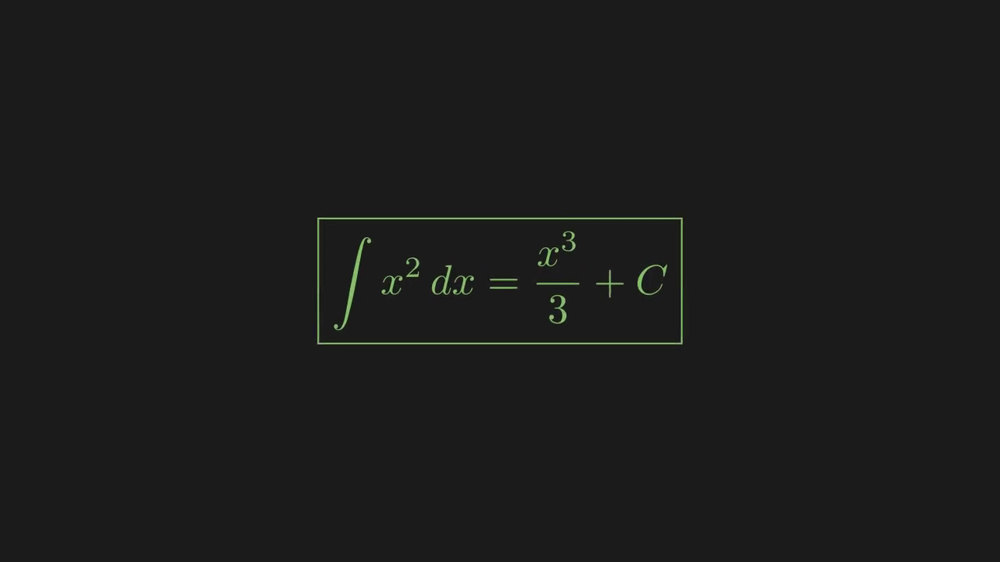

Watch the visual explanation
The argument in three moves
Accumulate area
The area under y=x² from 0 to a is a³/3, as a Riemann sum confirms.
Reverse the power rule
Raise the exponent from 2 to 3 and divide by the new exponent.
Differentiate to verify
d/dx(x³/3+C)=(1/3)(3x²)+0=x².
Geometry and conclusion


Study and reproduce it
The seven-page paper includes the full Riemann-sum derivation, the Fundamental Theorem of Calculus, common mistakes, and examples. All source files are available.